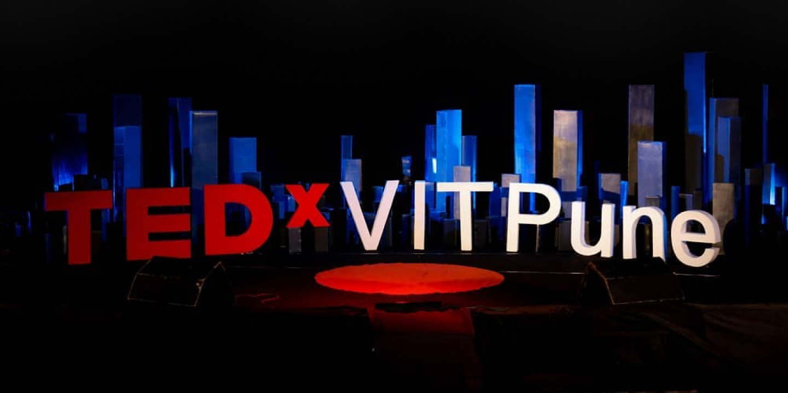
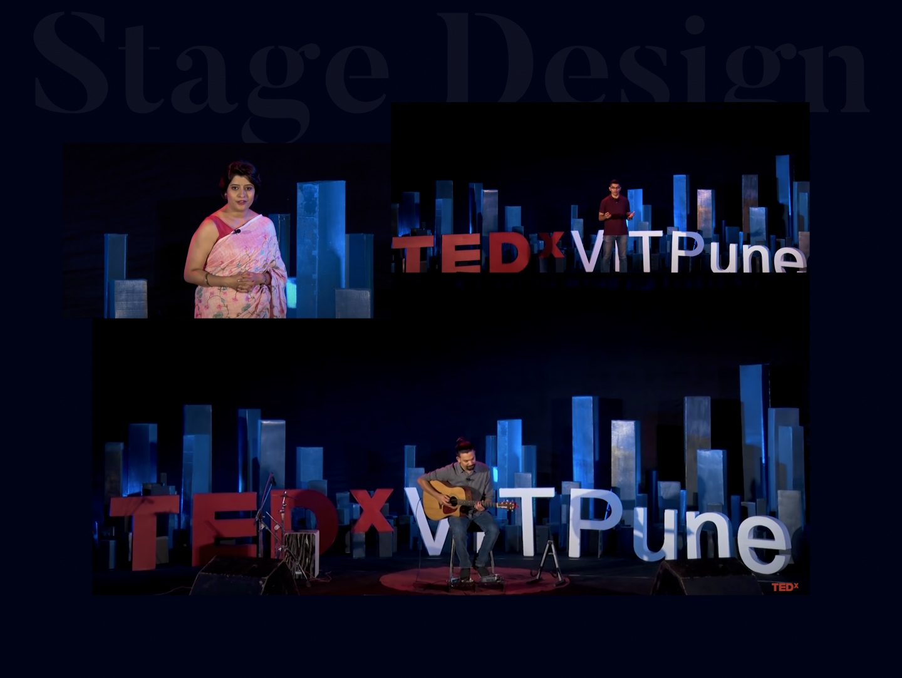
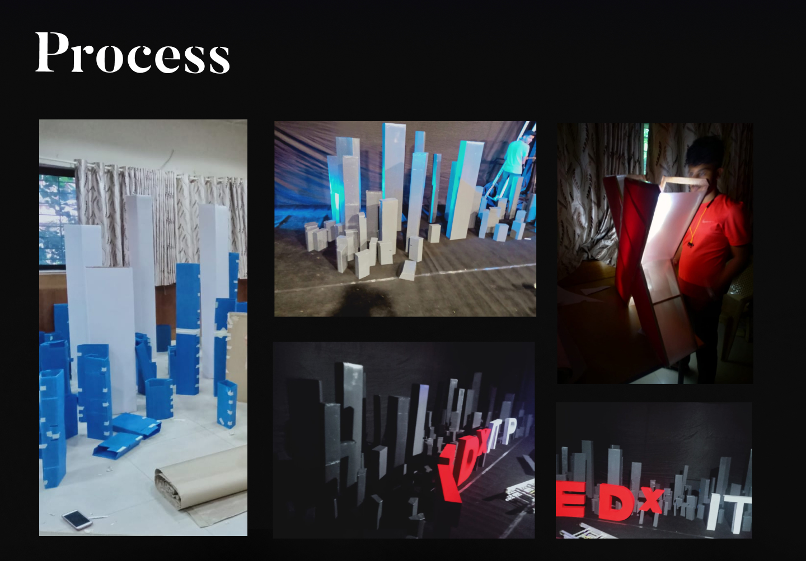

The Challenge
TEDxVITPune is one of Pune's longest-running TEDx events, bringing together speakers, performers, and an audience of 800+ for a single day of ideas worth spreading. For the 2019 edition, the organizing committee wanted something the event had never attempted: a stage that was not just a backdrop, but a spatial experience — one that transformed throughout the day and reinforced the event's theme visually. The brief was open-ended and the budget was tight. Everything had to be designed, built, and installed by students within eight weeks.
My Role
Art Director — Aesthetic Head of TEDxVITPune. Responsible for brand identity, stage concept, structural design, fabrication oversight, lighting design, and team coordination across 65+ volunteers in design, fabrication, logistics, and on-site assembly.
02 — Brand Identity
Visual System
The visual identity for TEDxVITPune 2019 needed to honor the established TEDx brand guidelines while carving out a distinct personality for this edition. I developed a cohesive system that extended from digital collateral to the physical stage itself.
Color Palette
Built around the signature TEDx red, the palette was extended with deep navy (#080B1E) and warm neutrals. The dark tones gave the brand a cinematic quality that translated directly to stage lighting—every digital design choice was made with the physical space in mind.
Typography
Bold, geometric type for headlines paired with a clean sans-serif for body text. The typographic hierarchy was designed to work across print banners, projected slides, and stage signage—maintaining legibility at scales from phone screens to 12-foot backdrops.
Collateral
The system unified social media graphics, event programs, speaker introduction cards, venue signage, attendee badges, and merchandise. Every touchpoint reinforced the same visual language, creating a cohesive brand experience from the moment attendees saw the event online to the moment they walked through the venue doors.
03 — Stage Design
Parallax Cityscape
The stage concept was a layered parallax cityscape—multiple planes of building silhouettes at varying depths that created an illusion of spatial depth when lit from behind. As speakers moved across the stage, the relationship between the layers shifted, making the backdrop feel alive rather than static.
The design went through three major iterations. Initial sketches explored abstract geometric forms, but user testing with the organizing committee revealed that a recognizable urban skyline would resonate more strongly with the audience and provide better visual framing for speakers on camera.
The final design featured five distinct depth layers, each cut from different materials to vary opacity and texture. The deepest layer was solid MDF painted matte black; mid-layers were semi-transparent fabric stretched over wooden frames; the foreground layer was detailed laser-cut acrylic. When backlit with programmable LEDs, the layers produced a subtle parallax effect visible from every seat in the auditorium.
Stage Design

04 — Team Leadership
Coordinating 65+ People
This was not a project I could build alone. As Art Director, I led a team of 65+ volunteers—most of whom had never worked on a production of this scale. The team was organized into three functional groups: Design (visual identity, signage, digital collateral), Fabrication (structural construction, material sourcing, painting), and Logistics (venue coordination, equipment rental, day-of setup).
I ran weekly all-hands meetings and daily standups with group leads during the final two weeks. The biggest leadership challenge was maintaining design quality across dozens of hands. I created detailed visual guides and templates for every fabrication task—specifying exact paint mixes, cut dimensions, and assembly sequences—so that volunteers with no design training could execute at the standard the event required.
Delegation was essential, but so was knowing when to step in. I personally oversaw every critical juncture: the first structural test of the rotating mechanism, the lighting programming, and the final 48-hour install marathon before the event.
05 — Process
Eight Weeks, Concept to Curtain
Weeks 1–2: Concept & Brand. Developed the parallax cityscape concept and complete brand identity system. Presented three stage directions to the organizing committee; the parallax approach was selected unanimously. Simultaneously recruited and onboarded the full volunteer team.
Weeks 3–4: Structural Design. Translated the stage concept into engineering drawings. Worked with local fabricators to source materials and validate structural feasibility. Built a 1:10 scale model to test sightlines and lighting angles from every section of the auditorium.
Weeks 5–6: Fabrication. Full-scale construction began. Columns were built from wooden frames and MDF panels. The rotating stage platform was assembled and tested for smooth, silent rotation. Parallax layers were cut and painted. The team worked in shifts across two workshops.
Week 7: Lighting & Integration. Programmable LED strips were wired behind each parallax layer. Lighting scenes were programmed to match the event's session structure—warm tones for talks, cooler tones for performances, dynamic color shifts for transitions. The rotating mechanism was integrated with the lighting controller for synchronized reveals.
Week 8: Install & Event Day. The entire stage was transported and assembled in the venue over 48 hours. Final lighting calibration, sound checks, and a full technical rehearsal. On event day, I directed all visual elements live—stage rotations, lighting cues, and backdrop changes—ensuring the 800+ attendees experienced a seamless production.
Process

06 — Reflections
What Leading This Taught Me
TEDxVITPune was the first time I was responsible for both the creative vision and the operational execution of a large-scale production. Two lessons stayed with me.
First, design systems are leadership tools. The visual guides and templates I created were not just about consistency—they were about giving 65 people the confidence to act without waiting for my approval. When the system is clear, people move faster and make better decisions on their own.
Second, the gap between a concept and a built thing is where most projects fail. Ideas are cheap; execution at scale is what matters. Managing material constraints, volunteer fatigue, venue restrictions, and a hard deadline taught me more about design than any studio course. The stage worked because every aesthetic decision was also a structural decision, a budget decision, and a logistics decision. That integration—thinking across domains simultaneously—is what I now consider the core skill of design leadership.